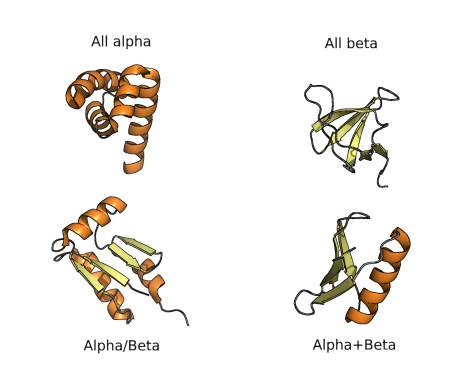
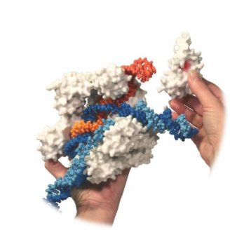

Introduction
Goals and Warnings
Structural Bioinformatics (SB) s a broad discipline that covers structural and computational biology, from visualization and analysis of the structure of biomacromolecules to protein modeling and molecular docking. The great promise of SB is predicated on the belief that a high-resolution structural information about biological systems will allow us to precisely reason about the function of these systems and the effects of modifications and perturbations.
The goals of SB require at least four different research lines (see Chapter 1 in “Structural Bioinformatics, 2nd Edition | Wiley” (n.d.a)). :
Visualization of complex structures with several sources of information: sequence, structural data, electrostatic fields, location of functional sites, and areas of variability.
Classification of the structures, making if necessary to cluster similar structures together in a hierarchical classification allow us to identify common origins and diversification paths. Similar to other fields of biology classification is tedious but required to understand the structural space.
Prediction of structures remains an area of keen interest and a field of research itself. As we will see below, the number of different sequences is much higher than the availability of structures, which make prediction an essential and useful tool.
Simulation. Experimentally obtained structures are primarily static structural models (see warning below). However, the properties of these molecules are often the results of their dynamic motions. The definition of energy functions that govern the folding of proteins and their subsequent stable dynamics can be analyzed by molecular dynamics simulations, although computation capacities may be limiting to reach a biologically relevant timescales.
Powered by large amount of data and great technical advances, the field has experienced a great revolution in the last decade. The increase of experimental capacities to analyze the structure of proteins and other biological molecules and structures (see Callaway (2020)) and the development of Artificial Intelligence (AI)-assisted structure prediction boosted the capacity of life-science researchers to address a wide variety of questions regarding proteins diversity, evolution and function. The implications of this revolution in biology, biotechnology, and biomedicine are still unforeseen.
Warning for current and future structural biologists

The surrealist Belgian painter René Magritte created a collection of surrealistic paintings entitled La trahison des images (1928–1929). The most renowned of those paintings show a smoking pipe and the following caption underneath: “Ceci n’est pas une pipe” (This is not a pipe). Yes, indeed! It is actually the painting of a pipe.
Similarly, a picture of a protein, or a PDB file with the coordinates of a protein structure, is not a protein. It is a representation of ONE structure. Even experimentally determined structures have two main limitations that we should always keep in mind: (1) they are a fixed structure whereas proteins in vivo are flexible and dynamic and (2) they are subjected to experimental error and they often contain regions of low reliability. Moreover, even experimentally obtained macromolecular structures are to some degree models, with a variable ratio between experimental data and computational prediction to match the experimental data (X-ray diffraction, cryo-EM density maps, NMR, SAXS, FRET…) with previously known structures or prediction models. That does not mean that protein structures are useless, they can be very useful, but we must be aware of the limitations as well as the applications.
Before going forward: Protein Structure 101
Although you can make some protein modeling without being an expert in structural biology, a basic understanding of protein structure is strongly advisable. Over the years, I noticed that graduate students in biology, biomedicine, and related fields have a very different background on protein structure. If you want to review and update your background on protein structure, I recommend you reading Chapter 2 of “Structural Bioinformatics, 2nd Edition | Wiley” (n.d.b), the great recent review by Stollar and Smith (2020) and the Wikipedia and Proteopedia articles on protein structures, which constituted my main source for this brief section.
Proteins are key components of life, playing key roles in almost any possible vital function, either as structural, or scaffolding elements or as active enzymes that catalyze metabolic reactions. Proteins are built as polymers of amino acids and the sequence of amino acids of a particular protein can be also called the primary structure of the protein. Amino acid chains can spontaneously fold up into three-dimensional structures, mostly stabilized by hydrogen bonds between amino acids. The amino acid sequence determines different layers of 3D structure. Each of the 20 natural amino acids has different physicochemical properties that affect its preferred conformation. Thus, the first level of folding is called secondary structure, forming common patterns as we will see in a moment.

These stretches of secondary structure patterns can fold in 3D due to interactions between the side chains of amino acids. This is called protein tertiary structure. Finally, two or more individual peptide chains can form multisubunit proteins that have the so-called quaternary structure.
It should be noted that the peptide bond itself cannot rotate as it has a double bond-like character. Therefore, rotation can only occur about the bond between the Cα and the C = O group, (the phi (φ) angle) and the Cα and the NH group, (the psi (ψ) angle). In fact, the polypeptide backbone chain is composed of a repeating series of two rotatable bonds followed by one non-rotatable (peptide) bond. However, not all 360º of the psi and phi angles are possible as neighboring sidechains can clash due to steric hindrance. For certain angles and amino acid combinations, the atoms cannot be in the same physical place and this partly explains why some amino acids have a higher propensity (likelihood) to form different types of secondary structures.

Within these restraints, the two principal local conformations that avoid steric hindrance and maximize backbone–backbone hydrogen bonding are the α-helix and the β-sheet secondary structures. The α-helix was proposed initially as left-handed by Linus Pauling in 1951, but the crystal structure of myoglobin in 1958 showed that, although both can be found, the right-handed form is the common one. In the common right-handed helices, the backbone NH group hydrogen bonds to the backbone C = O group of the amino acid located four residues earlier along the protein sequence. This results in a polypeptide chain that twists in a regular coil shape with the R-groups pointing outwards away from the peptide backbone. It takes approximately 3.6 residues to complete a full turn of a helix.
Different amino-acid sequences have different propensities for forming α-helical structures. Methionine, alanine, leucine, glutamate, and lysine have especially high helix-forming propensities, whereas proline and glycine have poor helix-forming propensities. Proline either breaks or kinks a helix, both because it cannot donate an amide hydrogen bond (having no amide hydrogen), and also because its bulky sidechain interferes sterically with the backbone of the preceding turn. However, proline is often seen as the first residue of a helix, it is presumed due to its structural rigidity. At the other extreme, glycine also tends to disrupt helices because its high conformational flexibility makes it entropically expensive to adopt the relatively constrained α-helical structure.
β-Sheets are composed of two or more extended polypeptide chains called β-strands that run alongside each other. They can be arranged in either a parallel or antiparallel manner. The residues arrange themselves in a regular zigzag manner with the adjacent peptide bonds pointing in opposite directions. In this arrangement, the NH group and the C = O group of each amino acid are hydrogen-bonded to the C = O group and NH group respectively on the adjacent strands. Chains can run in opposite directions, forming an antiparallel β-sheet, or in the same direction, forming a parallel β-sheet. Sidechains from each of the residues point away from the sheets and alternate in opposite directions between residues. It is common to see a pattern of alternating hydrophilic and hydrophobic residues in the primary structure, giving the β-sheets hydrophilic and hydrophobic faces.
Large aromatic residues (tyrosine, phenylalanine, tryptophan) and β-branched amino acids (threonine, valine, isoleucine) are favored to be found in β-strands. As in the case of α-helixes, β-strands are often ended by glycines, which are especially common in β-turns (the most common connector between strands), as amino acids with positive φ angles.
Ramachandran Plot
As you probably already figure out, many combinations of φ and ψ angles are forbidden because of the principle of steric exclusion: two atoms cannot be in the same place ad the same time. This was initially shown by Gopalasamudram Ramachandran, who also devised a plot to visualize the allowed angle values, so-called Ramachandran plot. This plot can represent the angles of a particular amino acid, of all the amino acids in a protein or many proteins. Analysis of φ and ψ angles in known proteins clearly show that roughly three-quarters of all possible φ, ψ combinations are excluded.

The core regions in the Rama plot also correspond with common secondary structures, as usually represented in textbooks.
Functionally and structurally relevant residues are more likely than others to have torsion angles that plot to the allowed but disfavored regions of a Ramachandran plot. The specific geometry of these functionally relevant residues, while somewhat energetically unfavorable, may be important for the protein’s function, catalytic or otherwise. Such conformations need to be stabilized by the protein using H-bonds, steric packing, or other means, and should very seldom occur for highly solvent-exposed residues.

Protein folds, domains and motifs
The final three dimensional tertiary structure of a protein is commonly referred as its fold. Within the overall protein fold, we can recognize distinct domains and motifs. Domains are compact sections of the protein that represent structurally and (usually) functionally independent regions. That means that a domain maintain its main features, even if separated from the overall protein. On the other hand, motifs are small substructures that are not necessarily independent and consist of only a few secondary structure stretches. Indeed, motifs can be also referred as super-secondary structure.
The diversity of protein folds, domains and motifs, and combination of those, can be used for classification of protein structures hierarchically, as in many other fields of biology. The first classification was proposed in the 70’s and consisted of four groups of folds, as shown in the figure below. All-α proteins are based almost entirely on an α-helical structure, and all β-structure are based on β-sheets. α/β structure is based on am mixture of α-helices and β-sheet, often organized as parallel β-strands connected by α-helices. Finally α+β structures consist of discrete α-helix and β-sheet motifs that are not interwoven (as they are in α/β proteins).

As known fold space has become more and more complex, these types of classifications have been adjusted and extended such that a complete hierarchy is created. The most commonly referred approaches to this sort of classification are those used by SCOP and CATH databases.
Hands on: Playing with secondary structures

There are a few online alternatives to model any peptide sequence and quickly see the effect of amino acid composition in the secondary structure. One of the best-known is Foldit (www.fold.it, Miller et al. (2020)), a gaming platform for biochemistry and structural biology teaching. It is a highly recommended alternative for most courses related to protein structure.
In this course we are going to try a more recent proposal, recently twitted by Sergey Ovchinnikov (see https://twitter.com/sokrypton/status/1535857255647690753). It is based on ColabFold (see https://github.com/sokrypton/ColabFold and Mirdita et al. (2022)), an Alphafold2 (see Jumper et al. (2021)) free notebook in Google Colab notebook. All you need is a Google account and the following cheatsheet.
Now go to ColabFold Single: https://colab.research.google.com/github/sokrypton/af_backprop/blob/beta/examples/AlphaFold_single.ipynb
Construct some small proteins and compare the output. Note that the first model will take 3-5 min, but the others will be faster. I provide here some interesting examples (IUPAC one-letter amino acid code):
AAAAAAAAAAAAAAAAAAAAAAAAAAAAAAAAAAAAAAAAAAAAAA
KKKKKKKKKKKKKKKKKKKKKKKKKKKKKKKKKKKKKKKKKKKKKKKKK
PVAVEARENGRLAVRVEGAIAVLIRENGRLVVRVEGG
PELEKHREELGEFLKKETGIAVEIRENGRLEVRVEGYTDVKIEGGTERLKRFLEEL
ACTWEGNKLTCA
Answer the following questions:
- Why is a poly-K more stable (dark blue) than a poly-A?
- Could you predict the structure of a poly-V or a poly-G?
- What would happen if you introduce a K5W in the structure number 2? and in the 4?
Now, try to create peptides with:
- Two helices
- A four-strands beta-sheet.
- Alpha-beta-beta-alpha.